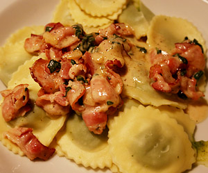

Ricotta Ravioli mit Speck-Rahm Sauce
4 von 6Speck kurz anbraten und etwas Knoblauch beigben. Mit etwas Weisswein ablöschen, Salbei, Rahm und Butter dazu. Mit Salz und Pfeffer abschmecken. Über die Ricotta-Ravioli geben.

Speck kurz anbraten und etwas Knoblauch beigben. Mit etwas Weisswein ablöschen, Salbei, Rahm und Butter dazu. Mit Salz und Pfeffer abschmecken. Über die Ricotta-Ravioli geben.

Montagsplausch Nr. 175. Der Abend hiess «Sparmenu».